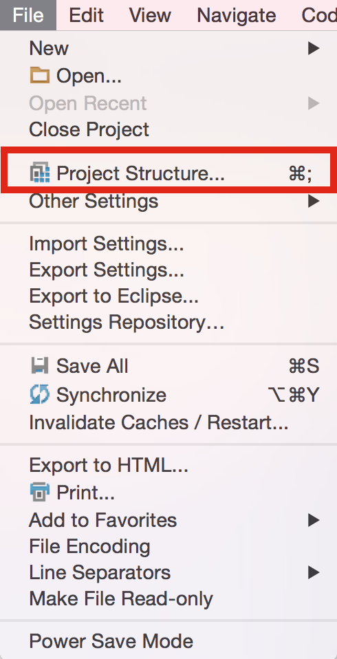
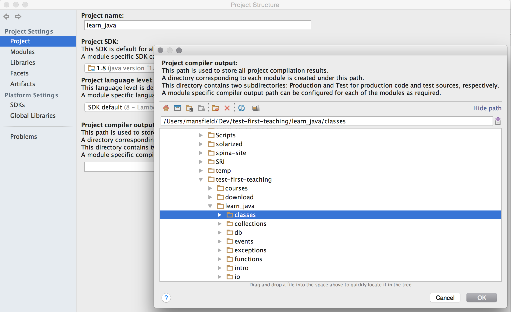
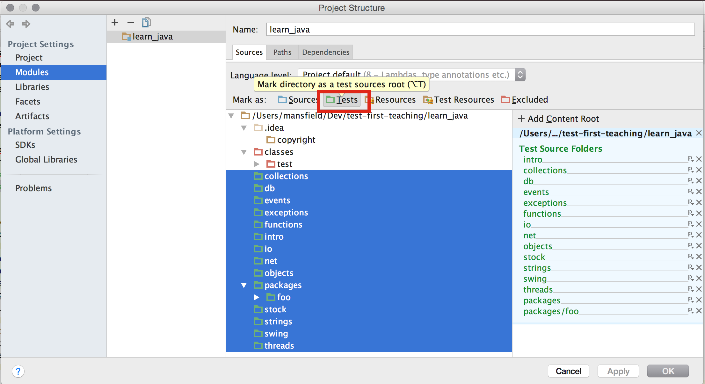
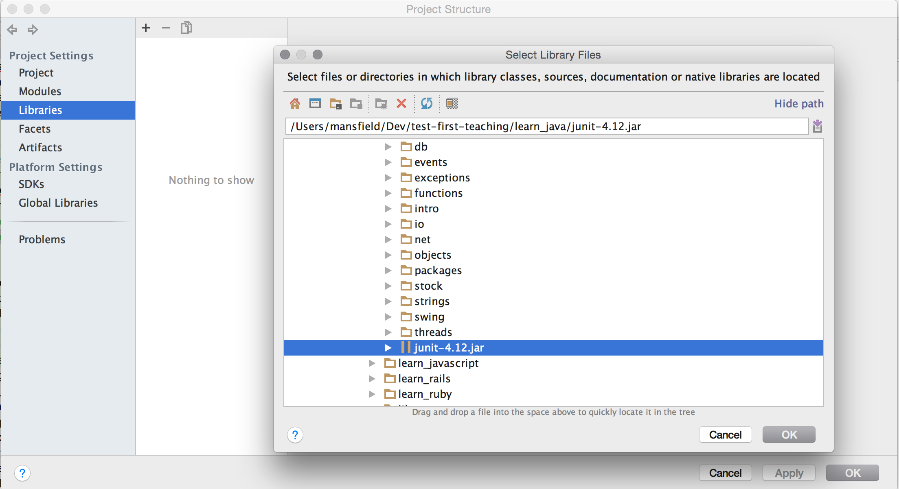

Test-First Training: Java
-
Clone this repo from GitHub
-
Download and install a JDK (Java Development Kit)
-
Download and Launch JetBrains IntelliJ IDEA
-
Open this project inside test-first-teaching/learn_java
-
Open intro/index.html in a local browser
-
Open
IntroTest.java in IntellJ
-
Set up your JDK
-
Click "Setup JDK"
-
Click "Configure..."
-
Click the "+" button
-
In "Add New SDK" menu, click "JDK"
-
Click "OK" a few more times

-
Configure the compiler output directory
- Select "File > Project Structure"

- Click the three dots beneath "Project Compiler Output"
- Click the brown folder icon to select the project directory
- Click the "Classes" directory

-
Configure Modules as Tests
- Select "File > Project Structure"
- Click "Modules"
- Select all directories except "Classes" and ".idea"
- Click "Mark as: Tests"

-
Add junit.jar to the classpath
- Select "File > Project Structure"
- Select "Add Library"
- Select the junit-4.12.jar file in this dir

Order of lessons: